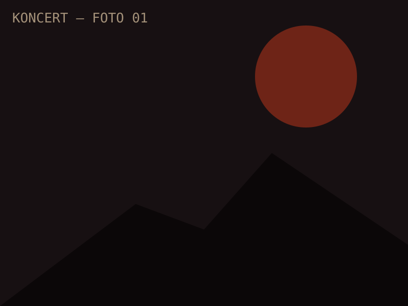
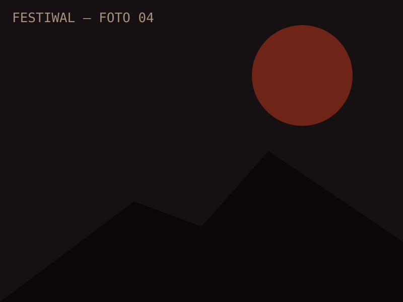

Kadr po kadrze
Galeria
Sceny, pot i światło. Najwięcej świeżych zdjęć znajdziesz na naszym Instagramie — tu zbieramy te, które lubimy najbardziej.




Kadr po kadrze
Sceny, pot i światło. Najwięcej świeżych zdjęć znajdziesz na naszym Instagramie — tu zbieramy te, które lubimy najbardziej.

